Ampolletas BABOR para Canva
SPA Service Excellence App · 19 ampolletas con beneficios, ingredientes y frases de venta · inglés y español
Toca 📋 Copiar en cualquier bloque y pégalo en Canva (Cmd+V dentro de un cuadro de texto). En el PDF, el botón abre ese bloque en internet: ahí vuelve a tocar 📋 Copiar.
- Hydra Plus · Hidratación
- Active Purifier · Purificación
- Perfect Glow · Luminosidad (glow)
- Multi Vitamin · Vitalización
- Nutri Restore · Nutritivo
- SOS Calming · Calmante
- Active Night · Regeneración
- Collagen Booster · Suavizado
- Lift Express · Lifting
- 3D Firming · Firmeza
- Instant Energy (Men) · Vitalidad
- Ceramide Power Serum · Protección
- Perfect Skin Collection · Luminosidad
- Barrier Protect Ampoule Serum Concentrate (B3) · Refuerzo de la barrera cutánea e hidratación intensiva
- Instant Soothing Ampoule Serum Concentrate (BG) · Alivio inmediato
- 10D Hyaluronic Acid Ampoule Serum Concentrate (HA) · Hidratación multidimensional
- Rejuvenation Ampoule Serum Concentrate (P) · Lifting inmediato
- Radiance Ampoule Serum Concentrate (C) · Luminosidad y tono uniforme
- Renewal Ampoule Serum Concentrate (A) · Renovación y rejuvenecimiento
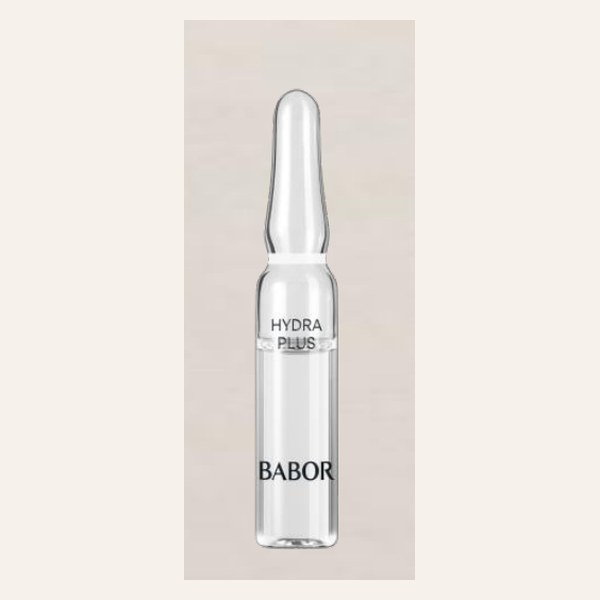
Hydra Plus
📋 Copiar nombreFicha
📋 Copiar| Para | Dry and dehydrated skin Piel seca y deshidratada |
|---|---|
| Efecto | Hydration Hidratación |
| Uso | Day Día |
Beneficios
📋 CopiarIngredientes principales
📋 Copiar- Low molecular weight hyaluronic acid
Ácido hialurónico de bajo peso molecular - Sugar beet extracts and oligosaccharides
Extractos y oligosacáridos de remolacha azucarera - Red algae marine sugar
Azúcar marino de algas rojas
Frases de venta
📋 CopiarI noticed your skin feels a little dry today. Does it often feel tight after the sun or the air conditioning?
Noté que hoy su piel se siente un poco seca. ¿Suele sentirse tirante después del sol o del aire acondicionado?
Based on what you told me, I would like to recommend our BABOR Hydra Plus ampoule.
Por lo que me comenta, le recomiendo nuestra ampolleta Hydra Plus de BABOR.
The instant benefit: plumping effect. After seven days: deeply hydrated skin.
El beneficio inmediato: efecto relleno. Después de siete días: piel profundamente hidratada.
It contains low molecular weight hyaluronic acid, which hydrates the skin deeply.
Contiene ácido hialurónico de bajo peso molecular, que hidrata la piel en profundidad.
Apply it in the morning after cleansing, before your moisturizer.
Aplíquela por la mañana después de limpiar la piel, antes de su crema hidratante.
Each ampoule is a single dose: open it, apply the serum to your face and neck, and gently press it in.
Cada ampolleta es una dosis: se abre, se aplica el sérum en rostro y cuello, y se presiona suavemente.
Would you like me to set it aside for you at Spa Reception, so you can take it home?
¿Le gustaría que se la aparte en la recepción del spa para que se la lleve a casa?
It is my pleasure. Spa Reception will have it ready for you.
Es un placer. La recepción del spa la tendrá lista para usted.
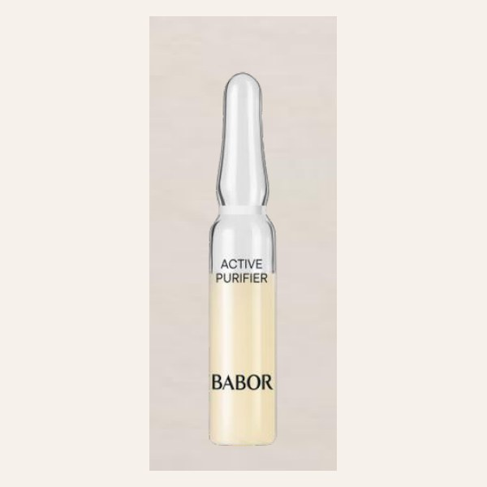
Active Purifier
📋 Copiar nombreFicha
📋 Copiar| Para | Acne-prone skin with blemishes or excess shine Piel propensa al acné, con granitos o brillo excesivo |
|---|---|
| Efecto | Purifying Purificación |
| Uso | SOS SOS |
Beneficios
📋 CopiarIngredientes principales
📋 Copiar- Shale oil
Aceite de esquisto - Tea tree oil
Aceite de árbol de té - Fine babassu seed powder
Polvo fino de semilla de babasú
Frases de venta
📋 CopiarDo you sometimes notice shine or small blemishes on your skin, especially in the heat?
¿A veces nota brillo o pequeños granitos en su piel, sobre todo con el calor?
Based on what you told me, I would like to recommend our BABOR Active Purifier ampoule.
Por lo que me comenta, le recomiendo nuestra ampolleta Active Purifier de BABOR.
The instant benefit: mattifying. After seven days: clearer skin.
El beneficio inmediato: matificado. Después de siete días: piel más clara.
It contains tea tree oil and shale oil, which help purify the skin and control shine.
Contiene aceite de árbol de té y aceite de esquisto, que ayudan a purificar la piel y controlar el brillo.
It is our SOS ampoule: use it whenever your skin needs extra help.
Es nuestra ampolleta SOS: úsela cuando su piel necesite ayuda extra.
Each ampoule is a single dose: open it, apply the serum to your face and neck, and gently press it in.
Cada ampolleta es una dosis: se abre, se aplica el sérum en rostro y cuello, y se presiona suavemente.
Would you like me to set it aside for you at Spa Reception, so you can take it home?
¿Le gustaría que se la aparte en la recepción del spa para que se la lleve a casa?
It is my pleasure. Spa Reception will have it ready for you.
Es un placer. La recepción del spa la tendrá lista para usted.
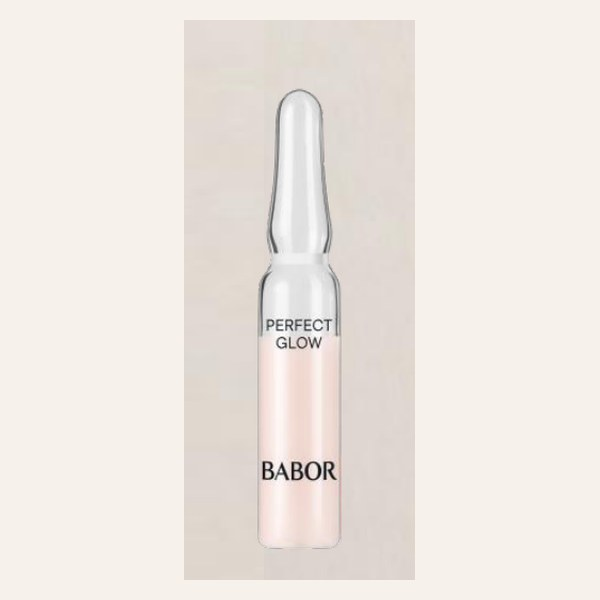
Perfect Glow
📋 Copiar nombreFicha
📋 Copiar| Para | Dehydrated, tired and dull skin Piel deshidratada, cansada y sin brillo |
|---|---|
| Efecto | Glowing Luminosidad (glow) |
| Uso | Pre-event Pre-evento |
Beneficios
📋 CopiarIngredientes principales
📋 Copiar- Glow pigments
Pigmentos glow - Marine exopolysaccharide
Exopolisacárido marino - P3 perfection peptide
Péptido de perfección P3 - Instant lifting
Lifting instantáneo
Frases de venta
📋 CopiarDo you have any special plans during your stay, like a dinner or a celebration?
¿Tiene planes especiales durante su estancia, como una cena o una celebración?
Based on what you told me, I would like to recommend our BABOR Perfect Glow ampoule.
Por lo que me comenta, le recomiendo nuestra ampolleta Perfect Glow de BABOR.
The instant benefit: radiant complexion. After seven days: more even skin tone.
El beneficio inmediato: tez radiante. Después de siete días: piel con tono uniforme.
It contains glow pigments and a perfection peptide, so your skin looks radiant right away.
Contiene pigmentos glow y un péptido de perfección, así que su piel se ve radiante de inmediato.
It is perfect before a special event, such as a dinner or a party.
Es perfecta antes de un evento especial, como una cena o una fiesta.
Each ampoule is a single dose: open it, apply the serum to your face and neck, and gently press it in.
Cada ampolleta es una dosis: se abre, se aplica el sérum en rostro y cuello, y se presiona suavemente.
Would you like me to set it aside for you at Spa Reception, so you can take it home?
¿Le gustaría que se la aparte en la recepción del spa para que se la lleve a casa?
It is my pleasure. Spa Reception will have it ready for you.
Es un placer. La recepción del spa la tendrá lista para usted.
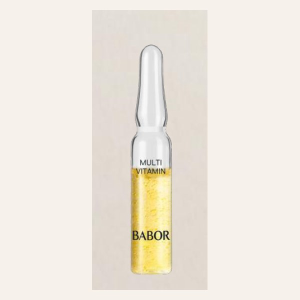
Multi Vitamin
📋 Copiar nombreFicha
📋 Copiar| Para | Dull, tired, uneven complexion that lacks radiance Tez apagada, cansada y desigual que carece de resplandor |
|---|---|
| Efecto | Vitalizing Vitalización |
| Uso | Night Noche |
Beneficios
📋 CopiarIngredientes principales
📋 Copiar- Thiotaine
Tiotaína - Vitamin C
Vitamina C - Vitamin A
Vitamina A - Vitamin E
Vitamina E - Vitamin B3
Vitamina B3 - Hyaluronic acid
Ácido hialurónico
Frases de venta
📋 CopiarHow has your skin been feeling lately? Sometimes travel and stress can make it look tired.
¿Cómo ha sentido su piel últimamente? A veces los viajes y el estrés hacen que se vea cansada.
Based on what you told me, I would like to recommend our BABOR Multi Vitamin ampoule.
Por lo que me comenta, le recomiendo nuestra ampolleta Multi Vitamin de BABOR.
The instant benefit: activation. After seven days: revitalized skin.
El beneficio inmediato: activación. Después de siete días: piel revitalizada.
It contains vitamins C, A, E and B3, a real vitamin boost for your skin.
Contiene vitaminas C, A, E y B3: una verdadera dosis de vitaminas para su piel.
Apply it at night after cleansing, before your night cream.
Aplíquela por la noche después de limpiar la piel, antes de su crema de noche.
Each ampoule is a single dose: open it, apply the serum to your face and neck, and gently press it in.
Cada ampolleta es una dosis: se abre, se aplica el sérum en rostro y cuello, y se presiona suavemente.
Would you like me to set it aside for you at Spa Reception, so you can take it home?
¿Le gustaría que se la aparte en la recepción del spa para que se la lleve a casa?
It is my pleasure. Spa Reception will have it ready for you.
Es un placer. La recepción del spa la tendrá lista para usted.
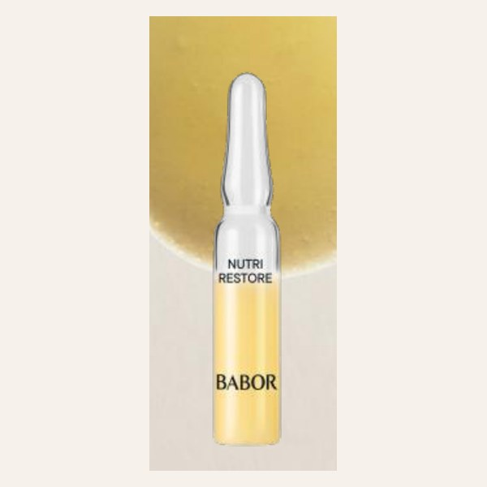
Nutri Restore
📋 Copiar nombreFicha
📋 Copiar| Para | Skin that needs nourishment Piel que necesita nutrición |
|---|---|
| Efecto | Nourishing Nutritivo |
| Uso | Night Noche |
Beneficios
📋 CopiarIngredientes principales
📋 Copiar- Blend of 19 micronutrients (amino acids, proteins, minerals, electrolytes, lipids and vitamins)
Mezcla de 19 micronutrientes (aminoácidos, proteínas, minerales, electrolitos, lípidos y vitaminas) - Ectoin
Ectoína - Aloe vera
Aloe vera - Squalane
Escualano - Argan oil
Aceite de argán
Frases de venta
📋 CopiarYour skin absorbed the oil very quickly. Does it usually feel dry or in need of nourishment?
Su piel absorbió el aceite muy rápido. ¿Normalmente la siente seca o con falta de nutrición?
Based on what you told me, I would like to recommend our BABOR Nutri Restore ampoule.
Por lo que me comenta, le recomiendo nuestra ampolleta Nutri Restore de BABOR.
The instant benefit: nourishment. After seven days: healthy-looking skin.
El beneficio inmediato: nutrición. Después de siete días: piel de aspecto saludable.
It contains nineteen micronutrients, squalane and argan oil to nourish your skin while you sleep.
Contiene diecinueve micronutrientes, escualano y aceite de argán para nutrir su piel mientras duerme.
Apply it at night after cleansing, before your night cream.
Aplíquela por la noche después de limpiar la piel, antes de su crema de noche.
Each ampoule is a single dose: open it, apply the serum to your face and neck, and gently press it in.
Cada ampolleta es una dosis: se abre, se aplica el sérum en rostro y cuello, y se presiona suavemente.
Would you like me to set it aside for you at Spa Reception, so you can take it home?
¿Le gustaría que se la aparte en la recepción del spa para que se la lleve a casa?
It is my pleasure. Spa Reception will have it ready for you.
Es un placer. La recepción del spa la tendrá lista para usted.
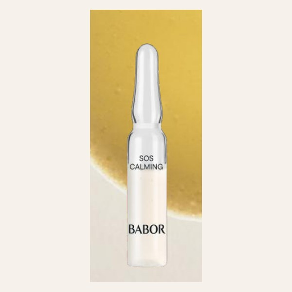
SOS Calming
📋 Copiar nombreFicha
📋 Copiar| Para | Sensitive, stressed skin with irritation and itching Piel sensible y estresada, con irritación y picor |
|---|---|
| Efecto | Calming Calmante |
| Uso | SOS SOS |
Beneficios
📋 CopiarIngredientes principales
📋 Copiar- Aloe vera
Aloe vera - Cherimoya extracts
Extractos de chirimoya - Finnish mushroom extracts
Extractos de hongos finlandeses - Centella asiatica
Centella asiática - Betaine
Betaína
Frases de venta
📋 CopiarI noticed a little redness on your skin. Does it get sensitive after the sun?
Noté un poco de enrojecimiento en su piel. ¿Se pone sensible después del sol?
Based on what you told me, I would like to recommend our BABOR SOS Calming ampoule.
Por lo que me comenta, le recomiendo nuestra ampolleta SOS Calming de BABOR.
The instant benefit: relief. After seven days: calmer skin.
El beneficio inmediato: alivio. Después de siete días: piel calmada.
It contains aloe vera and centella asiatica, which soothe and calm the skin.
Contiene aloe vera y centella asiática, que suavizan y calman la piel.
It is our SOS ampoule: use it whenever your skin needs extra help.
Es nuestra ampolleta SOS: úsela cuando su piel necesite ayuda extra.
Each ampoule is a single dose: open it, apply the serum to your face and neck, and gently press it in.
Cada ampolleta es una dosis: se abre, se aplica el sérum en rostro y cuello, y se presiona suavemente.
Would you like me to set it aside for you at Spa Reception, so you can take it home?
¿Le gustaría que se la aparte en la recepción del spa para que se la lleve a casa?
It is my pleasure. Spa Reception will have it ready for you.
Es un placer. La recepción del spa la tendrá lista para usted.
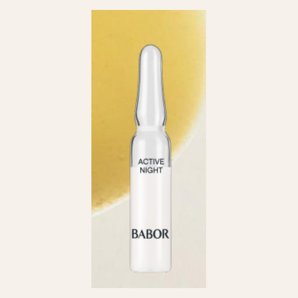
Active Night
📋 Copiar nombreFicha
📋 Copiar| Para | Tired skin that needs to recover overnight Piel cansada que necesita recuperarse por la noche |
|---|---|
| Efecto | Regeneration Regeneración |
| Uso | Night Noche |
Beneficios
📋 CopiarIngredientes principales
📋 Copiar- Passion fruit oil
Aceite de maracuyá - Salicornia europaea
Salicornia europea - Ceramide complex
Complejo de ceramidas
Frases de venta
📋 CopiarYou mentioned you are not sleeping very well. Do you feel your skin looks tired in the morning?
Me comentó que no está durmiendo muy bien. ¿Siente que su piel amanece cansada?
Based on what you told me, I would like to recommend our BABOR Active Night ampoule.
Por lo que me comenta, le recomiendo nuestra ampolleta Active Night de BABOR.
The instant benefit: overnight smoothing. After seven days: recovered skin.
El beneficio inmediato: suavizado durante la noche. Después de siete días: piel recuperada.
It contains passion fruit oil and ceramides, which help your skin recover overnight.
Contiene aceite de maracuyá y ceramidas, que ayudan a que su piel se recupere durante la noche.
Apply it at night after cleansing, before your night cream.
Aplíquela por la noche después de limpiar la piel, antes de su crema de noche.
Each ampoule is a single dose: open it, apply the serum to your face and neck, and gently press it in.
Cada ampolleta es una dosis: se abre, se aplica el sérum en rostro y cuello, y se presiona suavemente.
Would you like me to set it aside for you at Spa Reception, so you can take it home?
¿Le gustaría que se la aparte en la recepción del spa para que se la lleve a casa?
It is my pleasure. Spa Reception will have it ready for you.
Es un placer. La recepción del spa la tendrá lista para usted.
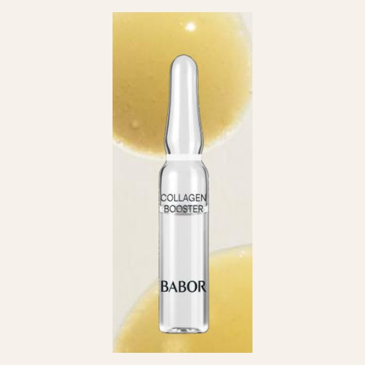
Collagen Booster
📋 Copiar nombreFicha
📋 Copiar| Para | Mature skin with loss of elasticity, fine lines and wrinkles Piel madura, con pérdida de elasticidad, líneas finas y arrugas |
|---|---|
| Efecto | Smoothing Suavizado |
| Uso | Day Día |
Beneficios
📋 CopiarIngredientes principales
📋 Copiar- Tripeptide
Tripéptido - Green algae and white lupin enzymes
Enzimas de algas verdes y lupino blanco - Plant amino acid complex
Complejo de aminoácidos de origen vegetal - Organic silicon
Silicio orgánico
Frases de venta
📋 CopiarAre you looking for something to keep your skin firm and smooth?
¿Busca algo para mantener su piel firme y suave?
Based on what you told me, I would like to recommend our BABOR Collagen Booster ampoule.
Por lo que me comenta, le recomiendo nuestra ampolleta Collagen Booster de BABOR.
The instant benefit: smoothing. After seven days: firmer-looking skin.
El beneficio inmediato: suavizado. Después de siete días: piel de aspecto más firme.
It contains a tripeptide and organic silicon, which support the skin's firmness.
Contiene un tripéptido y silicio orgánico, que ayudan a la firmeza de la piel.
Apply it in the morning after cleansing, before your moisturizer.
Aplíquela por la mañana después de limpiar la piel, antes de su crema hidratante.
Each ampoule is a single dose: open it, apply the serum to your face and neck, and gently press it in.
Cada ampolleta es una dosis: se abre, se aplica el sérum en rostro y cuello, y se presiona suavemente.
Would you like me to set it aside for you at Spa Reception, so you can take it home?
¿Le gustaría que se la aparte en la recepción del spa para que se la lleve a casa?
It is my pleasure. Spa Reception will have it ready for you.
Es un placer. La recepción del spa la tendrá lista para usted.
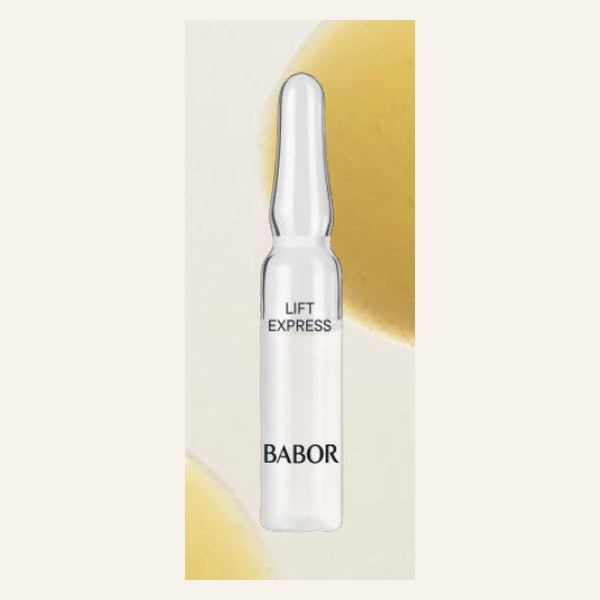
Lift Express
📋 Copiar nombreFicha
📋 Copiar| Para | Mature skin with all types of lines and wrinkles Piel madura, con líneas y arrugas de cualquier tipo |
|---|---|
| Efecto | Lifting Lifting |
| Uso | Pre-event Pre-evento |
Beneficios
📋 CopiarIngredientes principales
📋 Copiar- Marine exopolysaccharide
Exopolisacárido marino - Instant lifting
Lifting instantáneo - Betaine
Betaína
Frases de venta
📋 CopiarWould you like your skin to look lifted and refreshed for your evening plans?
¿Le gustaría que su piel se viera más firme y fresca para sus planes de esta noche?
Based on what you told me, I would like to recommend our BABOR Lift Express ampoule.
Por lo que me comenta, le recomiendo nuestra ampolleta Lift Express de BABOR.
The instant benefit: lifting. After seven days: reduces the look of wrinkles.
El beneficio inmediato: lifting. Después de siete días: reduce el aspecto de las arrugas.
It contains a marine ingredient with an instant lifting effect that you can feel in minutes.
Contiene un ingrediente marino con efecto lifting instantáneo que se siente en minutos.
It is perfect before a special event, such as a dinner or a party.
Es perfecta antes de un evento especial, como una cena o una fiesta.
Each ampoule is a single dose: open it, apply the serum to your face and neck, and gently press it in.
Cada ampolleta es una dosis: se abre, se aplica el sérum en rostro y cuello, y se presiona suavemente.
Would you like me to set it aside for you at Spa Reception, so you can take it home?
¿Le gustaría que se la aparte en la recepción del spa para que se la lleve a casa?
It is my pleasure. Spa Reception will have it ready for you.
Es un placer. La recepción del spa la tendrá lista para usted.
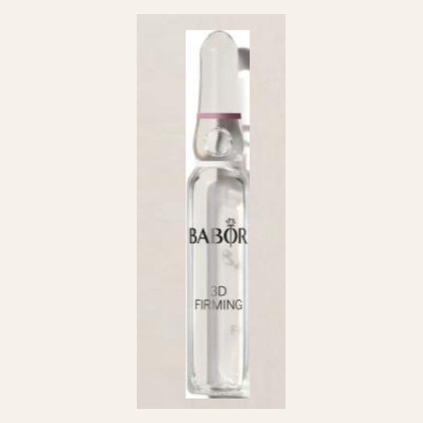
3D Firming
📋 Copiar nombreFicha
📋 Copiar| Para | Sagging, loss of elasticity and a less defined facial contour Flacidez, pérdida de elasticidad y óvalo facial poco definido |
|---|---|
| Efecto | Firming Firmeza |
| Uso | Day and night Día y noche |
Beneficios
📋 CopiarIngredientes principales
📋 Copiar- Organic silicon
Silicio orgánico - Glaucine extract
Extracto de glaucina - Elderflower
Flor de saúco - Hyaluronic acid
Ácido hialurónico
Frases de venta
📋 CopiarIs there anything you would like to improve in your skin, like firmness or the facial contour?
¿Hay algo que le gustaría mejorar en su piel, como la firmeza o el contorno del rostro?
Based on what you told me, I would like to recommend our BABOR 3D Firming ampoule.
Por lo que me comenta, le recomiendo nuestra ampolleta 3D Firming de BABOR.
The instant benefit: firmness. After seven days: firmer, smoother skin with a lifting effect.
El beneficio inmediato: firmeza. Después de siete días: piel más firme, lisa y con efecto lifting.
It contains organic silicon and glaucine extract to visibly firm and smooth the skin.
Contiene silicio orgánico y extracto de glaucina para reafirmar y alisar visiblemente la piel.
You can use it in the morning or at night after cleansing.
Puede usarla por la mañana o por la noche, después de limpiar la piel.
Each ampoule is a single dose: open it, apply the serum to your face and neck, and gently press it in.
Cada ampolleta es una dosis: se abre, se aplica el sérum en rostro y cuello, y se presiona suavemente.
Would you like me to set it aside for you at Spa Reception, so you can take it home?
¿Le gustaría que se la aparte en la recepción del spa para que se la lleve a casa?
It is my pleasure. Spa Reception will have it ready for you.
Es un placer. La recepción del spa la tendrá lista para usted.
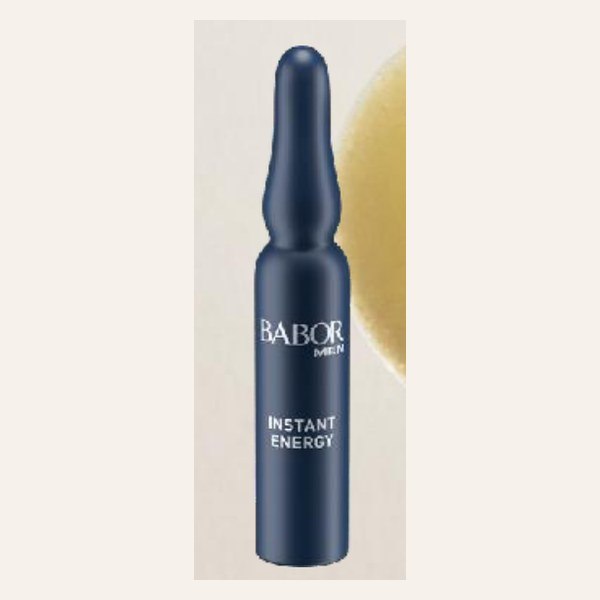
Instant Energy (Men)
📋 Copiar nombreFicha
📋 Copiar| Para | Tired skin in men Piel cansada en hombres |
|---|---|
| Efecto | Vitalizing Vitalidad |
| Uso | Day and night Día y noche |
Beneficios
📋 CopiarIngredientes principales
📋 Copiar- Taurine
Taurina - Caffeine
Cafeína - Siberian ginseng
Ginseng siberiano
Frases de venta
📋 CopiarLong flights and late nights can make the skin look tired. Do you use any skin care at home?
Los vuelos largos y las desveladas hacen que la piel se vea cansada. ¿Usa algún producto en casa?
Based on what you told me, I would like to recommend our BABOR Instant Energy (Men) ampoule.
Por lo que me comenta, le recomiendo nuestra ampolleta Instant Energy (Men) de BABOR.
The instant benefit: vitality. After seven days: “Wake-up” effect: a fresher, more rested look and instant hydration.
El beneficio inmediato: vitalidad. Después de siete días: efecto “wake up”: aspecto más fresco y descansado, hidratación inmediata.
It contains caffeine, taurine and Siberian ginseng for an instant wake-up effect.
Contiene cafeína, taurina y ginseng siberiano para un efecto despertar inmediato.
You can use it in the morning or at night after cleansing.
Puede usarla por la mañana o por la noche, después de limpiar la piel.
Each ampoule is a single dose: open it, apply the serum to your face and neck, and gently press it in.
Cada ampolleta es una dosis: se abre, se aplica el sérum en rostro y cuello, y se presiona suavemente.
Would you like me to set it aside for you at Spa Reception, so you can take it home?
¿Le gustaría que se la aparte en la recepción del spa para que se la lleve a casa?
It is my pleasure. Spa Reception will have it ready for you.
Es un placer. La recepción del spa la tendrá lista para usted.
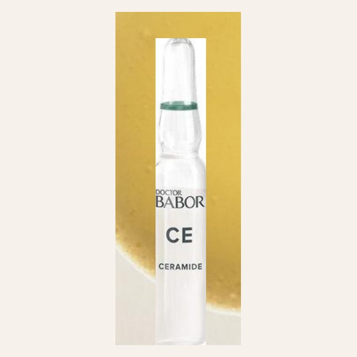
Ceramide Power Serum
📋 Copiar nombreFicha
📋 Copiar| Para | Irritated or sensitive skin Piel irritada o sensible |
|---|---|
| Efecto | Protection Protección |
| Uso | Day and night Día y noche |
Beneficios
📋 CopiarIngredientes principales
📋 Copiar- Blend of 3 ceramides
Mezcla de 3 ceramidas - 2% niacinamide
2% de niacinamida - 2D hyaluronic acid
Ácido hialurónico 2D
Frases de venta
📋 CopiarYour skin seems a little sensitive today. Do you sometimes feel discomfort or redness?
Su piel parece un poco sensible hoy. ¿A veces siente molestia o enrojecimiento?
Based on what you told me, I would like to recommend our BABOR Ceramide Power Serum.
Por lo que me comenta, le recomiendo nuestra Ceramide Power Serum de BABOR.
The instant benefit: protection. After seven days: immediate calm for irritated or sensitive skin, comfort and deep hydration; softer, more balanced, less red skin.
El beneficio inmediato: protección. Después de siete días: calma inmediata de la piel irritada o sensible, confort, hidratación profunda; piel más suave, equilibrada y menos enrojecida.
It contains three ceramides and niacinamide, which protect and strengthen the skin.
Contiene tres ceramidas y niacinamida, que protegen y fortalecen la piel.
You can use it in the morning or at night after cleansing.
Puede usarla por la mañana o por la noche, después de limpiar la piel.
Each ampoule is a single dose: open it, apply the serum to your face and neck, and gently press it in.
Cada ampolleta es una dosis: se abre, se aplica el sérum en rostro y cuello, y se presiona suavemente.
Would you like me to set it aside for you at Spa Reception, so you can take it home?
¿Le gustaría que se la aparte en la recepción del spa para que se la lleve a casa?
It is my pleasure. Spa Reception will have it ready for you.
Es un placer. La recepción del spa la tendrá lista para usted.
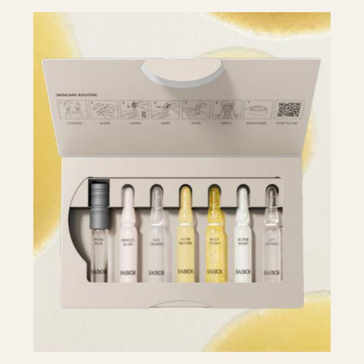
Perfect Skin Collection
📋 Copiar nombreFicha
📋 Copiar| Para | To discover the ampoules or as a gift Para descubrir las ampolletas o regalar |
|---|---|
| Efecto | Luminosity Luminosidad |
| Uso | Day and night Día y noche |
Beneficios
📋 CopiarIngredientes principales
📋 Copiar- Collection of 7 ampoules: Hydra Plus, Perfect Glow, SOS Calming, Nutri Restore, Multi Vitamin, Active Night and Lift Express
Colección de 7 ampolletas: Hydra Plus, Perfect Glow, SOS Calming, Nutri Restore, Multi Vitamin, Active Night y Lift Express
Frases de venta
📋 CopiarWould you like to try several of our ampoules, or are you looking for a special gift?
¿Le gustaría probar varias de nuestras ampolletas, o busca un regalo especial?
Based on what you told me, I would like to recommend our BABOR Perfect Skin Collection.
Por lo que me comenta, le recomiendo nuestra Perfect Skin Collection de BABOR.
The instant benefit: luminosity. After seven days: instantly brighter skin, immediate hydration, a plumper feel, better texture and more balanced, healthy skin.
El beneficio inmediato: luminosidad. Después de siete días: piel más luminosa al instante, hidratación inmediata, sensación de piel más rellena, mejor textura y piel más equilibrada y saludable.
The box includes seven different ampoules, one for each day of the week, from hydration to lifting.
La caja incluye siete ampolletas diferentes, una para cada día de la semana, de la hidratación al lifting.
You can use it in the morning or at night after cleansing.
Puede usarla por la mañana o por la noche, después de limpiar la piel.
Would you like me to set it aside for you at Spa Reception, so you can take it home?
¿Le gustaría que se la aparte en la recepción del spa para que se la lleve a casa?
It is my pleasure. Spa Reception will have it ready for you.
Es un placer. La recepción del spa la tendrá lista para usted.
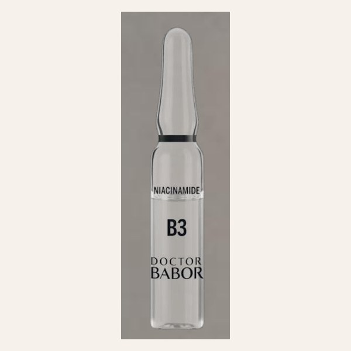
Barrier Protect Ampoule Serum Concentrate (B3)
📋 Copiar nombreFicha
📋 Copiar| Para | Weakened skin barrier Barrera cutánea debilitada |
|---|---|
| Efecto | Barrier reinforcement and intensive hydration Refuerzo de la barrera cutánea e hidratación intensiva |
| Uso | Day and night Día y noche |
Beneficios
📋 CopiarIngredientes principales
📋 Copiar- Biogen Plant Extract
Biogen Plant Extract - Ceramide complex
Complejo de ceramidas - 10% niacinamide
10% de niacinamida - 3D hyaluronic acid
Ácido hialurónico 3D
Frases de venta
📋 CopiarDoes your skin feel weaker or more reactive with the sun, the sea and the air conditioning?
¿Siente su piel más débil o reactiva con el sol, el mar y el aire acondicionado?
Based on what you told me, I would like to recommend our BABOR Barrier Protect Ampoule Serum Concentrate (B3).
Por lo que me comenta, le recomiendo nuestra Barrier Protect Ampoule Serum Concentrate (B3) de BABOR.
The instant benefit: regeneration. After seven days: restores and strengthens the skin barrier.
El beneficio inmediato: regeneración. Después de siete días: restaura y fortalece la barrera cutánea.
It contains ten percent niacinamide and ceramides to repair and strengthen the skin barrier.
Contiene diez por ciento de niacinamida y ceramidas para reparar y fortalecer la barrera de la piel.
You can use it in the morning or at night after cleansing.
Puede usarla por la mañana o por la noche, después de limpiar la piel.
Each ampoule is a single dose: open it, apply the serum to your face and neck, and gently press it in.
Cada ampolleta es una dosis: se abre, se aplica el sérum en rostro y cuello, y se presiona suavemente.
Would you like me to set it aside for you at Spa Reception, so you can take it home?
¿Le gustaría que se la aparte en la recepción del spa para que se la lleve a casa?
It is my pleasure. Spa Reception will have it ready for you.
Es un placer. La recepción del spa la tendrá lista para usted.
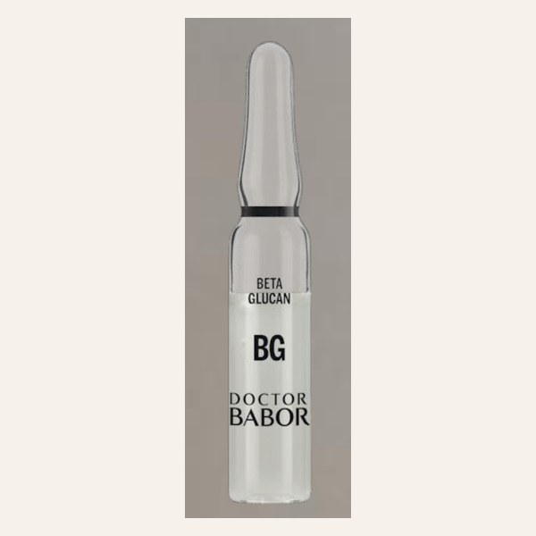
Instant Soothing Ampoule Serum Concentrate (BG)
📋 Copiar nombreFicha
📋 Copiar| Para | Sensitive or irritated skin that needs soothing Piel sensible o irritada que necesita calma |
|---|---|
| Efecto | Immediate relief Alivio inmediato |
| Uso | Day and night Día y noche |
Beneficios
📋 CopiarIngredientes principales
📋 Copiar- Biogen Plant Extract
Biogen Plant Extract - Beta-glucan
Betaglucano - Micro-silver
Microplata - 3D hyaluronic acid
Ácido hialurónico 3D
Frases de venta
📋 CopiarDoes your skin feel warm or irritated after the sun?
¿Siente su piel caliente o irritada después del sol?
Based on what you told me, I would like to recommend our BABOR Instant Soothing Ampoule Serum Concentrate (BG).
Por lo que me comenta, le recomiendo nuestra Instant Soothing Ampoule Serum Concentrate (BG) de BABOR.
The instant benefit: relief. After seven days: intensive calming action.
El beneficio inmediato: alivio. Después de siete días: acción calmante intensiva.
It contains beta-glucan and micro-silver, which give immediate relief and calm the skin.
Contiene betaglucano y microplata, que dan alivio inmediato y calman la piel.
You can use it in the morning or at night after cleansing.
Puede usarla por la mañana o por la noche, después de limpiar la piel.
Each ampoule is a single dose: open it, apply the serum to your face and neck, and gently press it in.
Cada ampolleta es una dosis: se abre, se aplica el sérum en rostro y cuello, y se presiona suavemente.
Would you like me to set it aside for you at Spa Reception, so you can take it home?
¿Le gustaría que se la aparte en la recepción del spa para que se la lleve a casa?
It is my pleasure. Spa Reception will have it ready for you.
Es un placer. La recepción del spa la tendrá lista para usted.
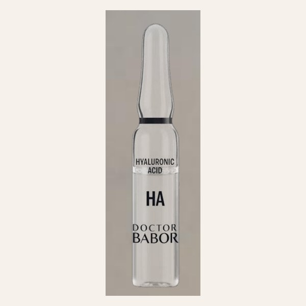
10D Hyaluronic Acid Ampoule Serum Concentrate (HA)
📋 Copiar nombreFicha
📋 Copiar| Para | Dehydrated skin Piel deshidratada |
|---|---|
| Efecto | Multidimensional hydration Hidratación multidimensional |
| Uso | Day and night Día y noche |
Beneficios
📋 CopiarIngredientes principales
📋 Copiar- Biogen Plant Extract
Biogen Plant Extract - Low, medium and high molecular weight hyaluronic acid (10D)
Ácido hialurónico de bajo, medio y alto peso molecular (10D) - Polyglutamic acid
Ácido poliglutámico - HY3 peptide
Péptido HY3
Frases de venta
📋 CopiarDo you feel your skin needs more hydration, even when you use a moisturizer?
¿Siente que su piel necesita más hidratación, aunque use crema hidratante?
Based on what you told me, I would like to recommend our BABOR 10D Hyaluronic Acid Ampoule Serum Concentrate (HA).
Por lo que me comenta, le recomiendo nuestra 10D Hyaluronic Acid Ampoule Serum Concentrate (HA) de BABOR.
The instant benefit: hydration. After seven days: deep, intensive and long-lasting hydration.
El beneficio inmediato: hidratación. Después de siete días: hidratación profunda, intensiva y duradera.
It contains ten types of hyaluronic acid that hydrate every layer of the skin.
Contiene diez tipos de ácido hialurónico que hidratan cada capa de la piel.
You can use it in the morning or at night after cleansing.
Puede usarla por la mañana o por la noche, después de limpiar la piel.
Each ampoule is a single dose: open it, apply the serum to your face and neck, and gently press it in.
Cada ampolleta es una dosis: se abre, se aplica el sérum en rostro y cuello, y se presiona suavemente.
Would you like me to set it aside for you at Spa Reception, so you can take it home?
¿Le gustaría que se la aparte en la recepción del spa para que se la lleve a casa?
It is my pleasure. Spa Reception will have it ready for you.
Es un placer. La recepción del spa la tendrá lista para usted.
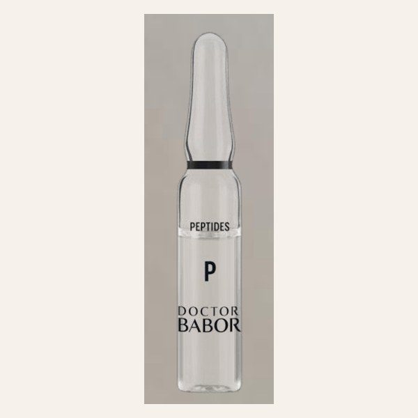
Rejuvenation Ampoule Serum Concentrate (P)
📋 Copiar nombreFicha
📋 Copiar| Para | Loss of firmness Pérdida de firmeza |
|---|---|
| Efecto | Immediate lifting Lifting inmediato |
| Uso | Day and night Día y noche |
Beneficios
📋 CopiarIngredientes principales
📋 Copiar- Biogen Plant Extract
Biogen Plant Extract - Mini-proteins
Miniproteínas - EGF oligopeptides
Oligopéptidos con EGF - Tetrapeptide-72
Tetrapéptido-72 - Organic silicon
Silicio orgánico - 3D hyaluronic acid
Ácido hialurónico 3D
Frases de venta
📋 CopiarAre you looking for a stronger anti-aging treatment to continue at home?
¿Busca un tratamiento antiedad más intensivo para continuar en casa?
Based on what you told me, I would like to recommend our BABOR Rejuvenation Ampoule Serum Concentrate (P).
Por lo que me comenta, le recomiendo nuestra Rejuvenation Ampoule Serum Concentrate (P) de BABOR.
The instant benefit: firmness. After seven days: intensive lifting and firming effect.
El beneficio inmediato: firmeza. Después de siete días: efecto lifting y reafirmante intensivo.
It contains peptides and mini-proteins that give an intensive lifting and firming effect.
Contiene péptidos y miniproteínas con un efecto lifting y reafirmante intensivo.
You can use it in the morning or at night after cleansing.
Puede usarla por la mañana o por la noche, después de limpiar la piel.
Each ampoule is a single dose: open it, apply the serum to your face and neck, and gently press it in.
Cada ampolleta es una dosis: se abre, se aplica el sérum en rostro y cuello, y se presiona suavemente.
Would you like me to set it aside for you at Spa Reception, so you can take it home?
¿Le gustaría que se la aparte en la recepción del spa para que se la lleve a casa?
It is my pleasure. Spa Reception will have it ready for you.
Es un placer. La recepción del spa la tendrá lista para usted.
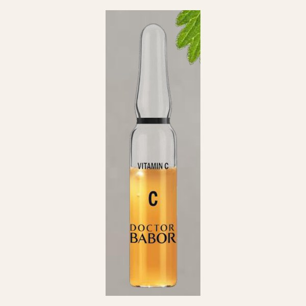
Radiance Ampoule Serum Concentrate (C)
📋 Copiar nombreFicha
📋 Copiar| Para | Uneven tone and lack of radiance Tono desigual y falta de luminosidad |
|---|---|
| Efecto | Radiance and an even tone Luminosidad y tono uniforme |
| Uso | Night Noche |
Beneficios
📋 CopiarIngredientes principales
📋 Copiar- Biogen Plant Extract
Biogen Plant Extract - 20% vitamin C ester
20% de éster de vitamina C - Astaxanthin
Astaxantina - 3D hyaluronic acid
Ácido hialurónico 3D
Frases de venta
📋 CopiarWould you like a more even and radiant skin tone?
¿Le gustaría tener un tono de piel más uniforme y luminoso?
Based on what you told me, I would like to recommend our BABOR Radiance Ampoule Serum Concentrate (C).
Por lo que me comenta, le recomiendo nuestra Radiance Ampoule Serum Concentrate (C) de BABOR.
The instant benefit: radiance. After seven days: radiance, a more even tone and rejuvenation.
El beneficio inmediato: luminosidad. Después de siete días: luminosidad, uniformidad y rejuvenecimiento.
It contains twenty percent vitamin C and astaxanthin to brighten and even out the skin tone.
Contiene veinte por ciento de vitamina C y astaxantina para iluminar y unificar el tono de la piel.
Apply it at night after cleansing, before your night cream.
Aplíquela por la noche después de limpiar la piel, antes de su crema de noche.
Each ampoule is a single dose: open it, apply the serum to your face and neck, and gently press it in.
Cada ampolleta es una dosis: se abre, se aplica el sérum en rostro y cuello, y se presiona suavemente.
Would you like me to set it aside for you at Spa Reception, so you can take it home?
¿Le gustaría que se la aparte en la recepción del spa para que se la lleve a casa?
It is my pleasure. Spa Reception will have it ready for you.
Es un placer. La recepción del spa la tendrá lista para usted.
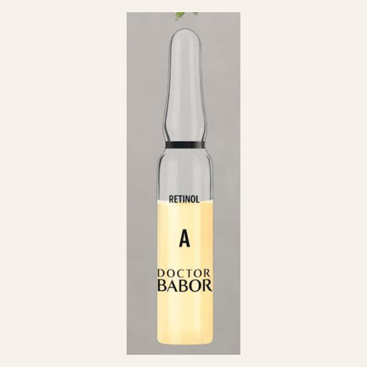
Renewal Ampoule Serum Concentrate (A)
📋 Copiar nombreFicha
📋 Copiar| Para | Wrinkles and lack of firmness Arrugas y falta de firmeza |
|---|---|
| Efecto | Renewal and rejuvenation Renovación y rejuvenecimiento |
| Uso | Night Noche |
Beneficios
📋 CopiarIngredientes principales
📋 Copiar- Biogen Plant Extract
Biogen Plant Extract - Retinol
Retinol - Bakuchiol
Bakuchiol - Biomimetic tripeptide-1
Tripéptido-1 biomimético - 3D hyaluronic acid
Ácido hialurónico 3D
Frases de venta
📋 CopiarAre you interested in renewing your skin and reducing the look of wrinkles?
¿Le interesa renovar su piel y reducir el aspecto de las arrugas?
Based on what you told me, I would like to recommend our BABOR Renewal Ampoule Serum Concentrate (A).
Por lo que me comenta, le recomiendo nuestra Renewal Ampoule Serum Concentrate (A) de BABOR.
The instant benefit: renewal. After seven days: intense cell renewal and greater firmness.
El beneficio inmediato: renovación. Después de siete días: renovación celular intensa y mayor firmeza.
It contains retinol and bakuchiol for intense skin renewal and greater firmness.
Contiene retinol y bakuchiol para una renovación intensa de la piel y mayor firmeza.
Apply it at night after cleansing, before your night cream.
Aplíquela por la noche después de limpiar la piel, antes de su crema de noche.
Each ampoule is a single dose: open it, apply the serum to your face and neck, and gently press it in.
Cada ampolleta es una dosis: se abre, se aplica el sérum en rostro y cuello, y se presiona suavemente.
Because it contains retinol, please remember to use sunscreen during the day.
Como contiene retinol, recuerde usar protector solar durante el día.
Would you like me to set it aside for you at Spa Reception, so you can take it home?
¿Le gustaría que se la aparte en la recepción del spa para que se la lleve a casa?
It is my pleasure. Spa Reception will have it ready for you.
Es un placer. La recepción del spa la tendrá lista para usted.
Frases de gestión de venta
Sirven para cualquier ampolleta: de detectar la necesidad al cierre.
Detectar la necesidad
📋 CopiarHow does your skin feel after the sun?
¿Cómo siente su piel después del sol?
Do you have any concern about your skin?
¿Tiene alguna inquietud sobre su piel?
What skincare products do you use at home?
¿Qué productos usa para su piel en casa?
Would you like your skin to look more hydrated or more radiant?
¿Le gustaría que su piel se viera más hidratada o más radiante?
Recomendar
📋 CopiarBased on what you told me, I would like to recommend this ampoule.
Por lo que me comenta, le recomiendo esta ampolleta.
This is the ampoule I used during your facial today.
Esta es la ampolleta que usé hoy en su facial.
It is perfect for your skin type.
Es perfecta para su tipo de piel.
You will see the first results right away.
Verá los primeros resultados de inmediato.
Explicar el valor
📋 CopiarEach ampoule is a single dose of concentrated serum.
Cada ampolleta es una dosis de sérum concentrado.
It works like a seven-day intensive treatment.
Funciona como un tratamiento intensivo de siete días.
It is easy to use and perfect for travel.
Es fácil de usar y perfecta para viajar.
You can continue the results of your treatment at home.
Puede continuar en casa los resultados de su tratamiento.
Responder objeciones
📋 CopiarI understand. Would you like to try a smaller set first?
Lo entiendo. ¿Le gustaría probar primero un set más pequeño?
Of course, take your time. I can keep it at Spa Reception for you.
Claro, tómese su tiempo. Se la puedo guardar en la recepción del spa.
You can use it together with your usual cream.
Puede usarla junto con su crema de siempre.
It is gentle, so it is suitable for sensitive skin.
Es suave, así que es adecuada para piel sensible.
Cerrar la venta
📋 CopiarWould you like me to set it aside for you at Spa Reception?
¿Le gustaría que se la aparte en la recepción del spa?
Would you prefer one box or the complete set?
¿Prefiere una caja o el set completo?
You can charge it to your room.
Puede cargarla a su habitación.
It is my pleasure. Spa Reception will have it ready for you.
Es un placer. La recepción del spa la tendrá lista para usted.
Venta cruzada
📋 CopiarIt works even better with a facial.
Funciona todavía mejor con un facial.
Would you like to add a hydrating mask to your treatment?
¿Le gustaría agregar una mascarilla hidratante a su tratamiento?
Many guests take one ampoule for the day and one for the night.
Muchos huéspedes llevan una ampolleta para el día y otra para la noche.